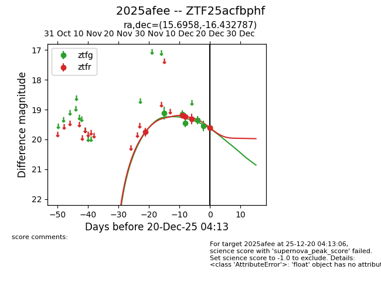
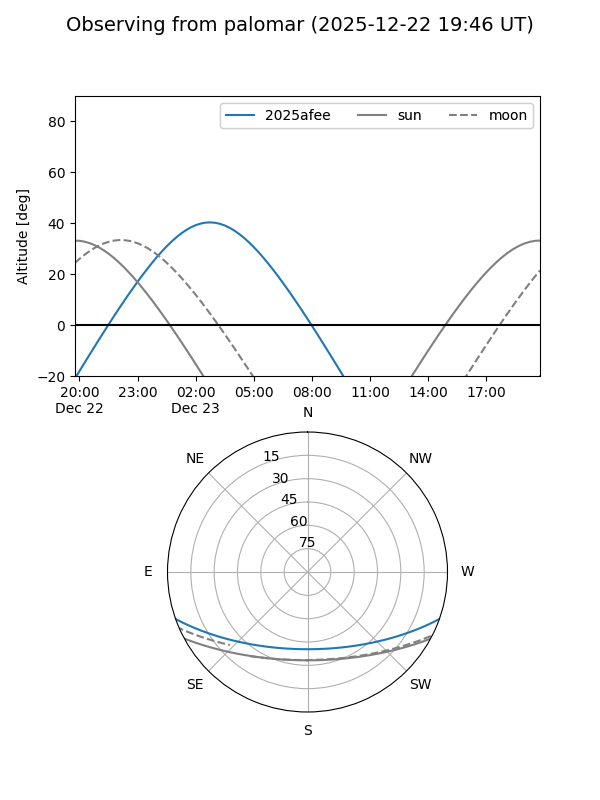
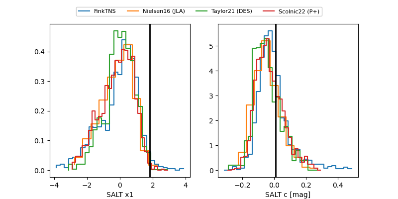

2025afee
Target 2025afee at 2025-12-22 14:03
Aliases and brokers:
FINK: fink-portal.org/ZTF25acfbphf
Lasair: lasair-ztf.lsst.ac.uk/objects/ZTF25acfbphf
ALeRCE: alerce.online/object/ZTF25acfbphf
TNS: wis-tns.org/object/2025afee
YSE: ziggy.ucolick.org/yse/transient_detail/2025afee
alt names
ZTF25acfbphf (ztf,fink_ztf)
2025afee (tns,yse)
Coordinates:
equatorial (ra, dec) = 15.6958,-16.43279
equatorial (HMS+DMS) = 01:02:46.99,-16:25:58.03
galactic (l, b) = (137.3168,-78.98637)
Flags:
Photometry:
last ztfg=19.81, ztfr=19.60
7 ztfg, 5 ztfr detections
Lightcurve

Visibility


Additional plots
